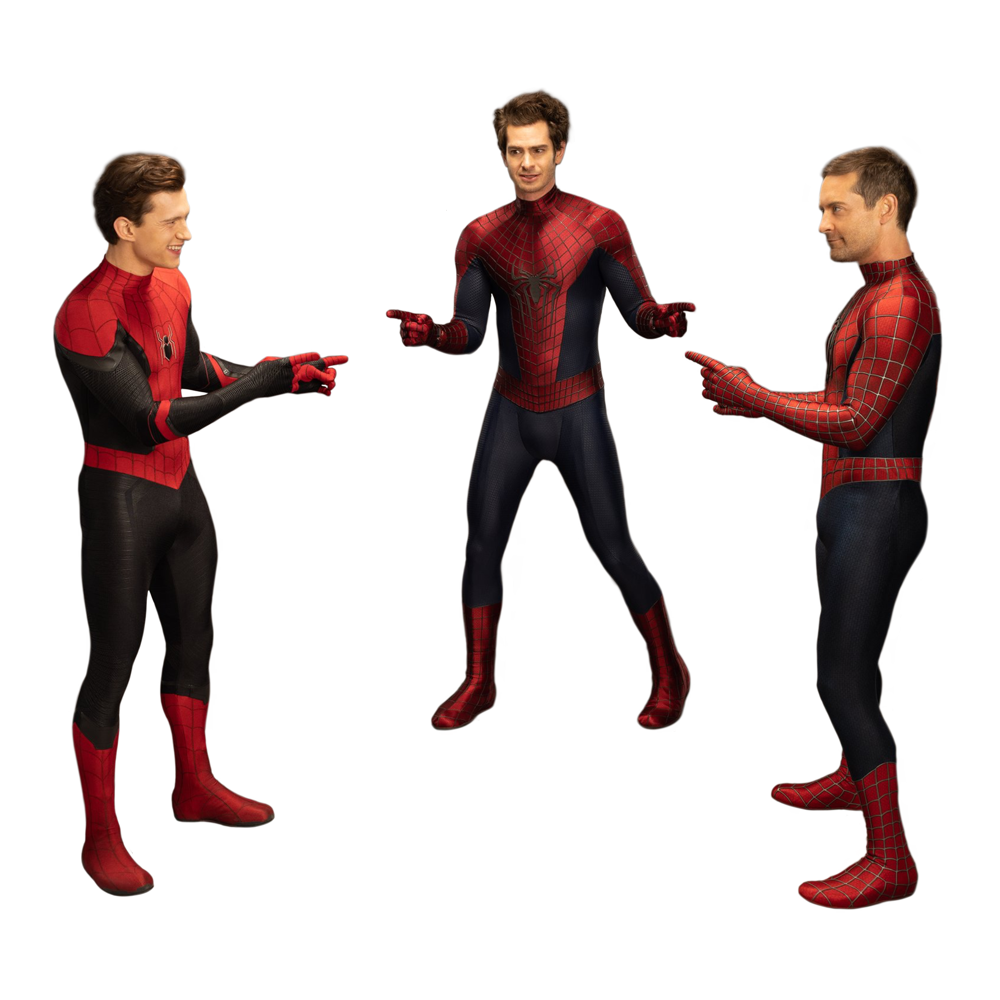
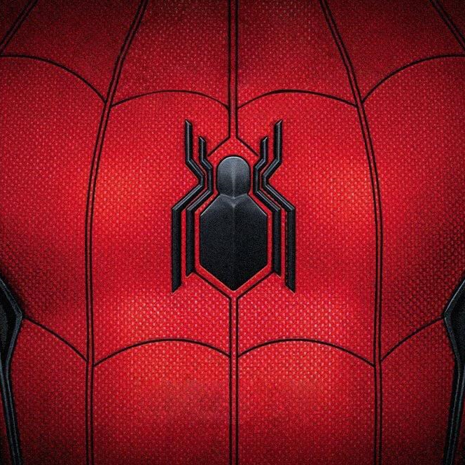

 |
Welcome to the Spider-Site!The one-stop place to learn about all the different Spider-Man actors and movie-franchises that have been made. Take a journey with Spider-Man across his various Movies! |

Some Quick Facts:
|
The Spider-Men |
||
|
Since 2002, there have been over three different actors for Spider-Man, click below to learn about them! |
||
|
The Friendly Neighborhood Spider-Man |
The Amazing Spider-Man |

The Spider-Man |

If it's you don't know who Spider-Man is, or just want to refresh your memory, take a look below to find some of the important information about Spider-Man.
Under the superhero name of Spider-Man is Peter Parker; A science loving, super-smart, nerdy, kid in high-school.
He lives in Queens, New York with his Aunt May, who adopted him after the passing of his parents.
Peter Parker got his powers when he was bitten by a radioactive spider, and in the process the abilities of a Spider transferred to him and he got the powers that make him SPIDER-man.
Enhanced strength, agility, speed, stamina – Basically an augmentation of his regular human body capabilities.
“Sticky” limbs – Spider-Man can use his hands or feet to stick to any surface.
Spidey-Sense – A sixth sense that alarms Spider-Man when something is wrong.
Spider-webs – The ability to shoot "spider-webs" from his wrist. Now the mechanics of this ability are a bit different between each of the movie franchises, but one thing is always the same; Spider-Man will shoot webs from his wrist.